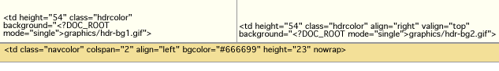
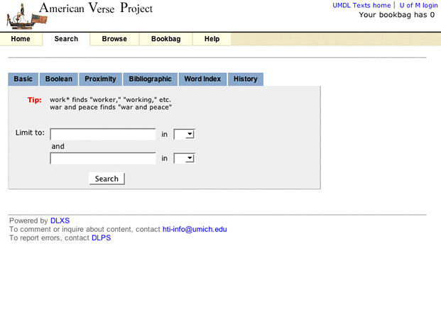
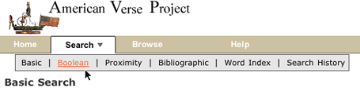

|
collection title gif |
 hdr-bg1.gif and hdr-bg2.gif provide background. hdr-bg1.gif and hdr-bg2.gif provide background. |
Text Class HTML utilizes two CSS files for controlling most
font and color characteristics: textclass.css and textclass-specific.css.
textclass.css is stored in at
the $DLXSROOT/web/t/text/ path
and contains all the default style declarations. textclass-specific.css is
created for each individual collection and stored at the $DLXSROOT/web/c/coll/ path.
References to both stylesheets are as follows:
<link rel="stylesheet" href="/t/text/textclass.css" type="text/css">
<link rel="stylesheet" href="<CSS_PATH filename=textclass-specific.css" type="text/css">
The <?CSS_PATH?> processing instruction resolves to the relevant path for the stylesheet file indicated by the filename attribute. Because textclass-specific.css is referenced after textclass.css, any style declarations that appear in textclass-specific.css will effectively override matching declarations in textclass.css. This is how fonts and background colors are varied for each collection. (full text of textclass.css)
Default text class XSL stylesheets create HTML that employs
a variety of relatively generic graphics that can be referenced
by all collection instances. A table
of shared files shows
those files that are stored in the $DLXSROOT/web/t/text/graphics/ directory.
Any alternative graphics by identical names may be stored
in individual collections'
graphics directories to replace the default
class graphics for that particular collection. Any files
not stored in collection graphics directories, but referenced
in the HTML, will be found in the class graphics
directory via the fallback mechanism.
Graphics files that are likely to be unique to each collection
are discussed in the section on header
background colors and graphics.
The header of each HTML page includes that area in the top 75 pixels of the page containing those elements associated with unique collection identity: main collection title, global links, if any, and the main navigation bar. The templates accommodate inclusion of background colors or graphics to provide some flexibility in creating unique appearances for different collections.
Main background color for the header area of the HTML
page is provided at three different levels: default
background colors for table cells specified in the
bgcolor attribute, style declarations in the textclass-specific.css file,
and table cell background graphics referenced by the
background attribute. Figure 3 illustrates
how these characteristics are specified in td opening
tags in the Voltaire électronique collection.
|  |
| Figure 3: Header cell color and graphics. |
The two top cells each have CSS class associations and background graphic
references to files in the local collection graphics directory. The
hdrcolor style is set locally in the textclass-specific.css
style sheet as
.hdrcolor { background-color: #FFFFF1 }
The background graphics files, hdr-bg1.gif and hdr-bg2.gif, are, in fact,
laying "over" the background color specified by the CSS style--the
order of precedence for CSS capable browsers is background,
class, bgcolor--but you see the CSS style colors
because the gifs are transparent. The lower cell has a bgcolor
value and a CSS style, navcolor, set again in the local
textclass-specific.css as
.navcolor { background-color: #F3E098 }
Figure 4 illustrates the appearance of another header based on the
same template using non-transparent background gifs that integrate with the
collection title gif and the CSS style for navcolor.
|
||
| Figure 4: component files for a header portion of UM Technical Reports templates. |
Collection title name is provided in the XML files via
the <?TITLE
mode="complex"?> processing instruction.
The PI will resolve to a text string or a graphic file
as specified in the colldb.
When rendered as text, titles are by default wrapped
in H3 tags by the XSL with CSS style
topheadlink so that collection title font
can be specified.
Color for navitation tabs is controlled by CSS styles, as are the border
colors that surround and underline the tabs. Tab color is, in the
"backgrounded" state, set by the navcolor style. The
tab "foreground" state color is specified with the
navhicolor style. Border and underline colors are set
with navdivision and navhrcolor styles
respectively.
Font settings for tabs are also CSS controlled. Relative style declarations for fonts are as below:
/* nav bar fonts */
.navlinks { font-family: Arial, Helvetica, sans-serif;
font-size: 12px;
font-weight: bold;
color: #666666;
text-decoration: none
}
/* nav link characteristics */
A:hover { text-decoration: underline }
A.nav { color: #FFFFFF;
text-decoration: none
}
A.nav:hover { color : #FFCC33;
text-decoration: underline
}
These styles set the default, "closed" tab state for all navigation fonts.
Beginning in release 12, the navigation menu is contained in a single, separate chunk of XML, navheader.xml, that is "chunked into" all main XML pages. The navheader.xsl XSL stylesheet checks the current URL parameters (via some global XML that is emitted for all runs of the cgi program) and determines what kind of page this is, and therefore which nav tab should be "open" and which should be "closed", using the corresponding css styles for each tab.
The result is as is shown in Figure 5 below.
|  |
| Figure 5 : Search page for American Verse. |
Note: Navigation pop-up submenus are gone as of Release 12 as part of our attempt to reduce, as much as possible, the reliance on JavaScript. In a previous release of the DLXS Text Class design, multiple search options were grouped under a single "Search" tab as a static sub-menu. Figure 6 illustrates this design as implemented by the ACLS History E-book collection.

|
| Figure 6 : The ACLS navigation bar showing static search sub-menu. |
Beginning with release 10 a new DHTML "pull-down" menu triggered by Javascript
onmouseover events became the default behavior.
This menu, as delivered in HTML, is shown in Figure 8.
|  |
| Figure 8: The American Verse navigation bar showing the "pull-down" menu. |
The pull-down menu technique is a modified implementation of the Project Seven positioned dropped down menus design, utilizing Project Seven extensions to Macromedia Dreamweaver. The elements of the pull-down menu, as they appear in the navhaeder.chnk template file, are shown in Figure 9.

|
| Figure 9 :"close-up" of the navigation bar, showing main DHTML menu components. |
HTML from navheader.chnk file is shown below; included here are
the two layers that constitute the hidden pull-down search menu, and the portion
of the navigation bar that triggers the menu (in highlighted colors). Since
the only portion of the menu that comes from the CGI are the search type link
hrefs, changing the look or shape of the menu is simply a matter of editing
the menu HTML. (Well, almost: the "closer" layer, which lays under
the drop down menu layer, should always be top-alligned with the menu layer,
but sufficiently wide and deep enough to provide a margin outside the left,
bottom, and right edges of the menu layer.) The javascript invoked by the search
link (in green below) opens the pull menu "snapped" to the image with
ID="menuanchor" (shown in red). This means that so long as menuanchor
is present in relation to the search tab, the pull-down menu will always appear
in relation to the navigation bar. The javascript functions that execute the
menu behavior are contained in the jsheader.chnk template, and
are imported into the page at load time.
<td id="sep1" width="1">
< img src="/t/text/graphics/plug.gif" width="1" height="23" border="0" vspace="0" hspace="0" name="menuanchor" id="menuanchor" alt="design graphic " > </td>
<!-- search -->
<!-- this nav bar tab is conditionally included by the cgi -->
<?INCLUDE_SEARCH_TAB>
<td id="searchtab" width="90" height="23" align="center" nowrap>
<span class="navlinks">
< a id="searchlink" href="<?SIMPLE_SEARCH_LINK>" class="nav" onMouseOver="P7_Snap('menuanchor','closer',-70,25,'menuanchor','ddsearchmenu',-50,25);P7_autoLayers(0,'ddsearchmenu','closer')"> Search<img name="navmenuarrow" src="/t/text/graphics/navdwnarrow.gif" alt="design graphic" width="16" height="8" border="0"></a></span>
</td>
<td id="sep2" width="1"><img src="/t/text/graphics/plug.gif" width="1" height="1" border="0" alt="design graphic"> </td>
<div style="position:absolute; left:15px; top:70px; width:420px; height:22px; z-index:3; visibility: hidden;" id="ddsearchmenu"> <table width="420" border="0" cellspacing="0" cellpadding="0"> <tr> <td bgcolor="#666666">
<table width="100%" border="0" cellspacing="1" cellpadding="0">
<tr>
<td class="mencellup" height="22" bgcolor="#E5E5E5" nowrap>
<span class="smallformfont"><a class="menunav" href="<?SIMPLE_SEARCH_LINK>">Basic</a></span>
|
<span class="smallformfont"><a class="menunav" href="<?BOOLEAN_SEARCH_LINK>">Boolean</a></span>
|
<span class="smallformfont"><a class="menunav" href="<?PROXIMITY_SEARCH_LINK>">Proximity</a></span>
|
<span class="smallformfont"><a class="menunav" href="<?SEARCH_HISTORY_LINK>">Search History</a></span>
</td>
</tr>
</table></td> </tr> </table> </div>
<div id="closer" style="position:absolute; left:3px; top:70px; width:460px; height:50px; z-index:2; visibility: hidden;"><a href="javascript:;" onMouseOver="P7_autoLayers(0)"><img src="/t/text/graphics/plug.gif" name="Image1" width="460" height="50" hspace="0" vspace="0" border="0" id="Image1" alt="design graphic"></a></div>
<!-- end menu divs -->
The Project Seven implementation is very reliable, working effectively for Netscape 4.7 and up, and for Internet Explorer 5 and up (and most other browsers) for the PC and Mac platforms. Even so, the search page design offers static link alternatives for all menu options.
(Note: The implementation of the pull-down menu, however, is
not tied to the cgi since the cgi only provides the HREF values
for the various links in the menu. Alternative markup for the earlier design
is available, and will be supplied in the distribution.)
Modifying the appearance of the pull-down menu background colors and font characteristics is accessible through CSS class declarations, shown below.
A.menunav { color: #000000; text-decoration: none }
A.menunav:hover { color : #FF6633; text-decoration: underline }
/* the color of popup menu cells in the up state - #BABCEA */
.mencellup { background-color: #E5E5E5; }
/* the color of the bground table cell for the menu nav i.e., the border color for nav cells */
.menucellground { background-color: #666666; }
The font style of the menu labels themselves is controlled by the
smallformfont class.